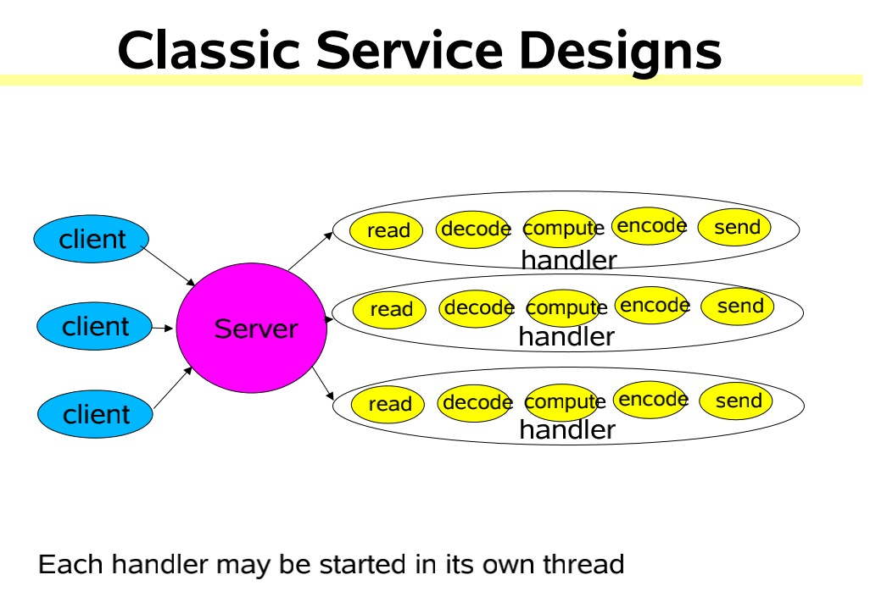
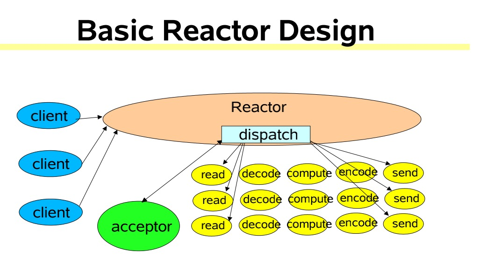
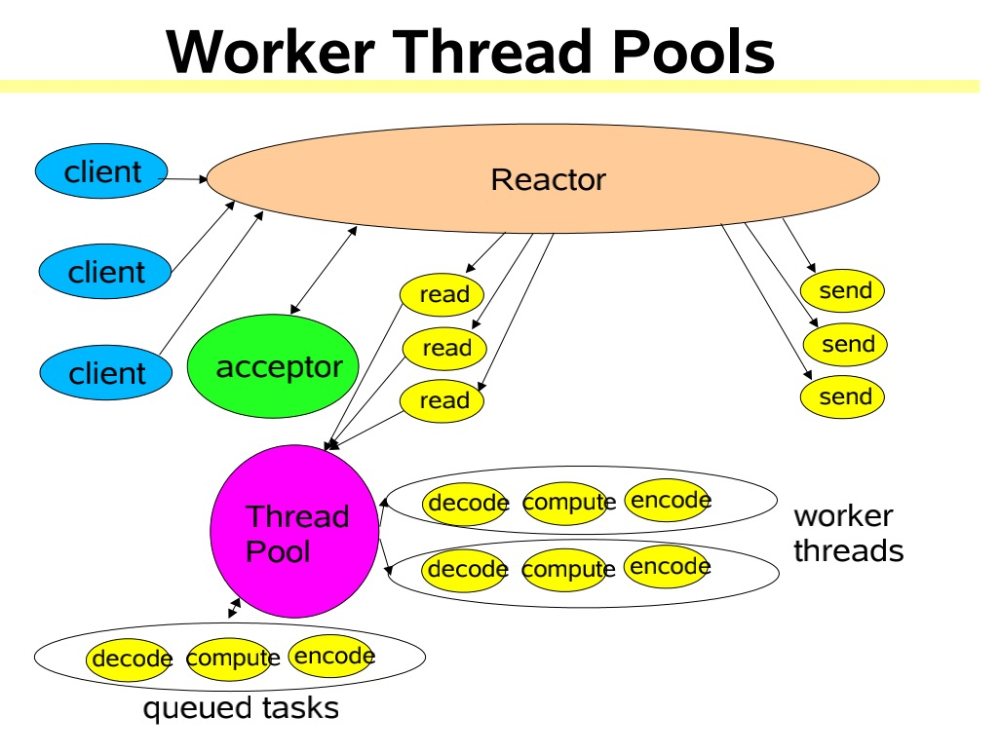
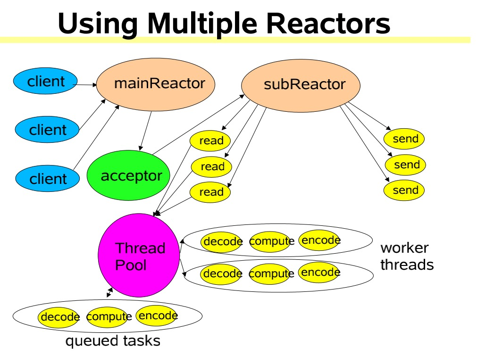

Reactor线程模型
Reactor是什么?
The reactor design_pattern is an event_handling pattern for handling service requests delivered concurrently to a service handler by one or more inputs. The service handler then demultiplexes the incoming requests and dispatches them synchronously to the associated request handlers.
通过wiki中的定义我们可以发现Reactor的重点
- 事件驱动
- 可以处理一个或多个输入源
- 通过多路复用将请求的事件分发给对应的处理器处理
根据大神Doug Lea 在 《Scalable IO in Java 》中的介绍，Reacotr模型主要分为三个角色
- Reactor：把IO事件分配给对应的handler处理
- Acceptor：处理客户端连接事件
- Handler：处理非阻塞的任务
为什么使用Reactor？
传统阻塞IO模型的不足:
- 每个连接都需要独立线程处理，当并发数大时，创建线程数多，占用资源
- 采用阻塞IO模型，连接建立后，若当前线程没有数据可读，线程会阻塞在读操作上，造成资源浪费
针对传统阻塞IO模型的两个问题，可以采用如下的方案
- 基于池化思想，避免为每个连接创建线程，连接完成后将业务处理交给线程池处理
- 基于IO复用模型，多个连接共用同一个阻塞对象，不用等待所有的连接。遍历到有新数据可以处理时，操作系统会通知程序，线程跳出阻塞状态，进行业务逻辑处理
Reactor线程模型的思想就是基于IO复用和线程池的结合
Reactor线程模型分类
根据Reactor的数量和处理资源的线程数量的不同，分为三类：
- 单Reactor单线程模型
- 单Reactor多线程模型
- 多Reactor多线程模型
单Reactor单线程模型
这种模型在Reactor中处理事件，并分发事件，如果是连接事件交给acceptor处理，如果是读写事件和业务处理就交给handler处理，但始终只有一个线程执行所有的事情
该线程模型的不足
- 仅用一个线程处理请求，对于多核资源机器来说是有点浪费的
- 当处理读写任务的线程负载过高后，处理速度下降，事件会堆积，严重的会超时，可能导致客户端重新发送请求，性能越来越差
- 单线程也会有可靠性的问题
针对上面的种种不足，就有了下面的线程模型
单Reactor多线程模型
这种模型和第一种模型到的主要区别是把业务处理从之前的单一线程脱离出来，换成线程池处理，也就是Reactor线程只处理连接事件和读写事件，业务处理交给线程池处理，充分利用多核机器的资源、提高性能并且增加可靠性
该线程模型的不足
- Reactor线程承担所有的事件，例如监听和响应，高并发场景下单线程存在性能问题
多Reactor多线程模型
这种模型下和第二种模型相比是把Reactor线程拆分了mainReactor和subReactor两个部分，mainReactor只处理连接事件，读写事件交给subReactor来处理。业务逻辑还是由线程池来处理
mainRactor只处理连接事件，用一个线程来处理就好。处理读写事件的subReactor个数一般和CPU数量相等，一个subReactor对应一个线程，业务逻辑由线程池处理
这种模型使各个模块职责单一，降低耦合度，性能和稳定性都有提高
这种模型在许多项目中广泛应用，比如Netty的主从线程模型等
Reactor三种模式形象比喻
餐厅一般有接待员和服务员，接待员负责在门口接待顾客，服务员负责全程服务顾客
Reactor的三种线程模型可以用接待员和服务员类比
- 单Reactor单线程模型：接待员和服务员是同一个人，一直为顾客服务。客流量较少适合
- 单Reactor多线程模型：一个接待员，多个服务员。客流量大，一个人忙不过来，由专门的接待员在门口接待顾客，然后安排好桌子后，由一个服务员一直服务，一般每个服务员负责一片中的几张桌子
- 多Reactor多线程模型：多个接待员，多个服务员。这种就是客流量太大了，一个接待员忙不过来了
操作系统IO模型
面试的时候也许你被问到过IO模型，可能你知道有五种，可是却不一定能准确指出他们之间的关系，下面我们介绍下这五种IO模型
五种IO模型
- 阻塞IO
- 非阻塞IO
- IO复用（select和poll）
- 信号驱动
- 异步IO（Posix.1 的 aio…系列函数）
一个输入操作一般分为两个阶段：
- 等待数据准备好
- 把数据从内核拷贝到进程
一个套接字的输入操作，第一步是等待数据到达网络，当分组到达时，它被拷贝到内核中的某个缓冲区，第二步是将数据从内核缓冲区拷贝到应用缓冲区
那我们来分别看下这五种IO模型
阻塞IO模型
阻塞IO是最通用的IO模型，使用该模型接收数据时，在数据没有到之前程序会一直等待。例如函数recvfrom，内核会一直阻塞该请求直到有数据到才返回，如下图所示：
如上图所示，进程在调用recvfrom时，该系统调用直到数据到达且拷贝到应用缓冲区或出错才返回。那阻塞的时间就是从调用recvfrom开始到返回的这段时间，当进程返回成功指示时，应用进程开始处理数据报。
非阻塞IO模型
当把套接字设置成非阻塞方式时，即通知内核：当请求的IO操作非得让进程睡眠不能完成时，不要让进程睡眠，而应返回一个错误，直到数据准备好，并将数据拷贝到应用缓冲区返回成功指示，进程调用结束。如下图所示：
从图中我们可以看出，进程会反复调用recvfrom，前三次调用一直没有数据返回，因此立即返回一个EWOULDBLOCK错误，在第四次调用的时候，数据才准备好，并拷贝到了应用缓冲区，recvfrom返回成功指示，然后就时进程处理数据
当一个应用进程像这样对一个非阻塞描述字循环调用recvfrom时，我们称之为轮训。应用进程连续不断的查询内核，验证某操作是否准备好，这样会极大的浪费CPU的时间
IO复用模型
IO复用模型支持调用select或poll，会阻塞在select或poll上，而不是阻塞于真正的IO系统调用。阻塞在select调用，等待数据报套接口可读。当select返回套接口可读条件时，再调用recvfrom将数据拷贝到应用缓冲区。如下入所示：
通过阻塞IO模型和IO复用模型的对比，我们发现由之前的一次系统调用变成了两次系统调用，好像变差了，其实并没有，select可以等待多个描述字准备好，同时select可以设置超时时间。
信号驱动IO模型
信号驱动IO是让内核在描述字准备好时用信号SIGIO通知我们。首先允许套接口进行信号驱动IO，然后通过系统调用sigacation安装信号处理程序。此系统调用立即返回，进程继续工作，是非阻塞的。当数据报准备好被读时，为该进程生成一个SIGIO信号，随后在信号处理程序中调用recvfrom读取数据报，并通知主循环数据已经准备好被处理或者通知主循环让它来读取数据报，如下图所示：
异步IO模型
异步IO让内核启动操作，并在整个操作完成后（包括将数据从内核拷贝到用户空间）通知我们。如下图所示：
异步IO模型和信号驱动IO模型的主要区别是：信号驱动IO是由内核通知我们何时启动IO操作，而异步IO是由内核通知我们IO操作何时完成
五种IO模型的对比
通过上面对五种IO模型的介绍，我们发现前四种IO模型的主要区别点在于第一阶段，第二阶段基本相同：在数据从内核拷贝到调用者的缓冲区时，进程阻塞在recvfrom调用。异步IO模型的两个阶段是和前四种不同的，对比如下图所示：
我们发现五种IO模型没有提到同步IO模型，却提到了异步IO模型，这是为什么？
首先我们看下Posix对同步IO和异步IO的定义：
同步IO操作引起请求进程阻塞，直到IO操作完成
异步IO操作不引起请求进程阻塞
我们可以发现，根据上面的定义，前四种模式：阻塞IO模型、非阻塞IO模型、IO多路复用模型和信号驱动模型，其实都属于同步IO模型，因为他们四个都会经历真正的IO操作（recvfrom）且阻塞了进程，只有异步IO模型与异步IO的定义匹配
参考资料
关注【憨才好运】微信公众号，了解更多精彩内容⬇️⬇️⬇️